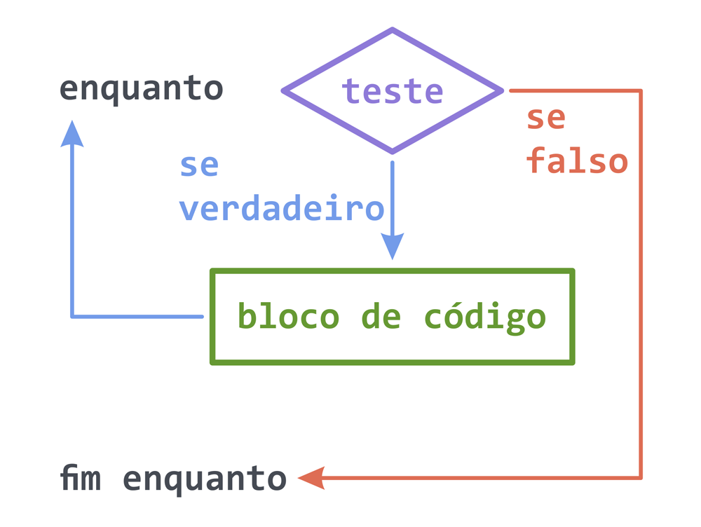
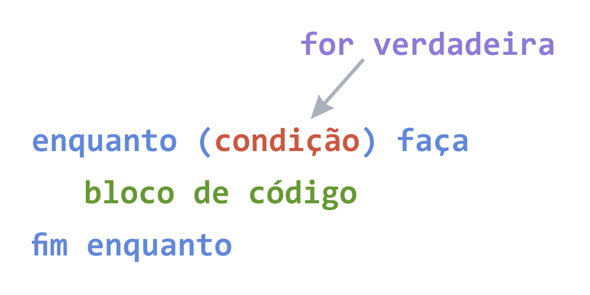

A estrutura (ou laço) de repetição while tem 2 partes
Enquanto o teste (condição) for verdadeiro, entra no bloco de código e volta a testar. Se o teste (condição) for falso, segue para a próxima linha de código.
Nota: Se houver um contador, este deve ser incrementado dentro do bloco de código do while.
A sintaxe (forma de escrever) é a seguinte:
Ex: 1. Enquanto o valor for menor que 5, mostre o valor na tela.
Ex: 2. Receba um valor e enquanto o contador for menor que o valor informado, mostre o contador na tela.